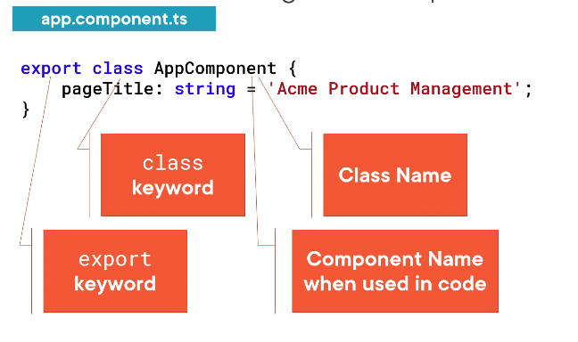
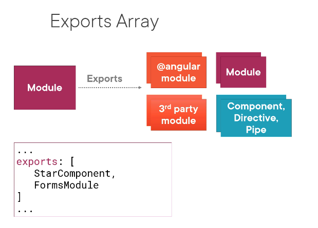
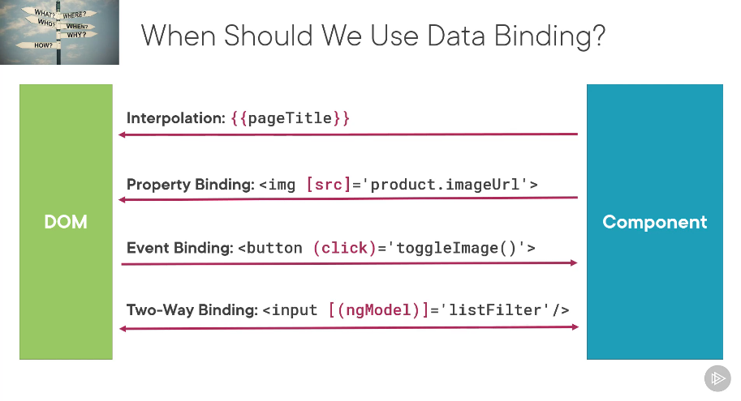
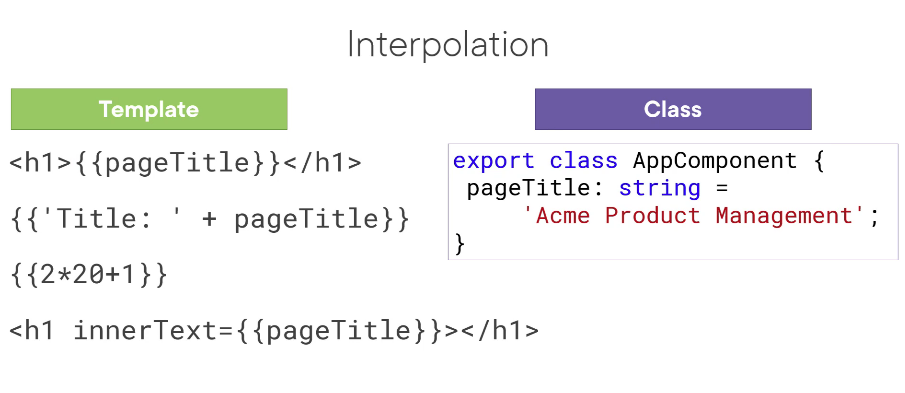

ANGULAR
Theory
- Angular is a Javascript framework for building client side applications (apps that run on client's browser).
- Code is written in Typescript which is an enhanced version of Javascript.
- Structure is reusable components. Then services that give them functionality like drawing data from database, performing methods etc.
- The template is the UI (html), the class has properties and methods (css and typescript), which are defined in the ts file. Additional info is defined with meta data.
- There is only one index.html file in a web app. It then draws its other pages and interface changes from other files.
- Export is indicated before a component so it can be used across the app.
- Dependencies are packages required for development (DevDependencies) and deployment.
- Package.json file holds every file the app needs to run. It ensures everyone on the team installs the right stuff for the app. npm install then installs everything defined in the package.json file.
- When adding Bootstrap and Font-awesome, the links are drawn from the node_modules file not the web.
- For a component (eg app.components) to pull another component (eg pm-products) as a directive, the component being pulled must have been declared in a module which will serve as its parent.
Tips
- When you have error messages, the one at the top is likely the one that's responsible for the whole long list of errors.
- Any feature that isn't working probably has its module missing. So when building, understand what module controls what so that you can import and declare (things imported from outside sources are declared under imports) accordingly.
-It helps to draw out the map of your app. i.e the modules, components, imports and exports like the tutorial does. It helps you understand your app better. And if editing a template, it also helps understand the template you're working on. Ultimately, it gives you a deeper understanding of how Angular works.
-Do not use capital at all in file and folder naming, as a convention!
-Always first study the structure of an app that you want to edit before tweaking it or trying to generate shit.
-Reference the checklists of the tutorial modules when stuck.
AppComponents syntax
import { Component } from '@angular/core';
@Component({
selector:
'app-component-overview',
templateUrl:
'./component-overview.component.html',
styleUrls:
['./component-overview.component.css']
})
export class ComponentOverviewComponent {
}
Where the "selector" is like the id of the component. That lets you use it as a 'directive'(input it) in other components.
The selector is used as a html tag in the body.
The class: defines the properties and methods needed by the view.
Component decorator: defines the metadata (includes the view).

The top dection shows imports that we need for the page to run.
Class syntax

class name in pascal casing.

method and property names in camel casing. They live inside AppComponent{}
A class becomes a component when given metadata.
@Component({
metadata is all within here
})
The decorator: is the @component(). All decorators have @ and are functions so have () and the {} encases the metadata that's passed into it.

pageTitle picks its string from the class. pm-root is called up later as a html tag.

You're telling Angular where to find that 'component decorator' function. THIS SHYTE IS CASE SENSITIVE!
App Modules
The app module (app.module.ts) holds all other modules in the app, and holds its own components (app.component.ts).
When a module is imported (under "imports") here, it becomes accessible to the app.
Everything you 'declare' must also be imported before it'll work and vice versa. In a module, you must declare the components and import other modules before it can hold them. Here's the module format:


Using the 'selector' of a component, you can then fix the component into another component, say like as a child.

The image shows the selector pm-products being called as a directive in the template of app.components.ts to generate its html.
Let's have a little story. Angular comes and sees the above image. He notices the html in the app.components is a directive. He then looks inside the app.module for it and when he sees it's been imported from a certain location AND declared, he now knows where to find it;- in the product-list.components file (which has its html templateUrl linked to it from another file). Now he can display the page.
More on Modules
The Angular module provides a template resolution environment for each component that belongs to the module, giving it a way to find and resolve the special syntax put into our html. In other words, the module provides everything the components need to work. Template resolution is done module by module.

Stuff you can export
ngModel is a directive used for two way binding. It's part of the FormsModule. FormsModule is imported for two way binding to work.
#ImportTruth: Imports are not inherited, meaning if moduleA imports moduleB, then moduleC imports moduleA(who now has B in him), B still wont be accessible to C(even though A has B and C has A). However, if A re-exported B then C can have access to B.
Don't use the 'providers' array to register servies anymore (old practice), use providedIn inside the @injectable. Like so

It may give an error when the same components are declared in multiple modules.
Declaration essentially is the module stating (by listing) the components that belong to it (along with the directives and pipes those components need). They can only be declared in one module.
The bootstrap array basically defines what the index.html file needs to start up the application.


If I were to rename some of the Angular lingo, this is what i'll call them:
- selector = name
- template = html UI
- decorator = Angular component identifier
- directive = pre-defined html calledup
- metadata = info
- data binding = linking data to ui
- property binding = databinding that calls property value from elsewhere
- event binding = respond to event by binding
- two-way binding = template-component reactions
- bootstrapping = knighting as homepage
- module = components holder
- template expression = template's bound data
- interpolation = {{one-way binding}}
- *ngIf = make shit appear/disappear
- *ngFor = make shit format the same
- pipes = style databound
- boolean = datatype, true/false
- parameter = pipe metadata
- interface = property/method set
- getter and setter = filter shit
- backing variable = filter pool
- container component = parent component
- nested component = child component
- OnChanges = when anything changes,..
- dependency = stuff classes need to work
- reactive extensions(RxJS) =
- observables = array of fleeting momentous events
- asynchronus = responds at later time (like emails)
- synchronus = real-time responses (like phone call)
- operators = do shit to data.
- generics = <dataset>
- route parameter = route id
- snapshot = read a parameter one time
- safe navigation operator = ? retutning 'null'
- ActivatedRouteSnapshot = stores info on a route at any time stamp
- private = only accessible by stuff in the same module
- lazy loading = load home first, others asynchronously for speed.
- ternary operator = short if statement
Data binding coordinates communication between a template and its class.
Property binding calls property value from elsewhere. Syntax <img [src]="product.imageUrl"> where the property src is being drawn from the template expression value of imageUrl. It can also be done using interpolation like so <img src={{product.imageUrl}}>.
Another example, <h1 [inputName]='crabs.legPart'></h1>


Event binding instead of binding a template element to a component class property, it does the reverse by sending a user action to the component to retrieve new formatting. E.g, a button may listen for a click then call up a function from the component property class. 

Pipes
Pipes style bound data before it's shown. Pipe syntax is
{{ product.productStuff | pipecommand: 'extra1' : 'extra2' : '1.2-2' }} where extra are parameters and '1.2-2' means one whole figure and 2dp (2-2). A pipe must be declared (and imported) all the way in the app module before components can use it.
Build a pipe when you want to perform application wide transformations.

Building a custom Pipe: Custom pipes are mainly used for app unique data transformations. The pipe is a file named file.pipe.ts, then follows the syntax below.
This is taught in lesson 5 of module 7.

Interpolation is a data binding technique. Its synatx is < >{{pageTitle}}< > It's a one way binding from class to template. Class is pageTitle: string = 'kdgjs';
. (I could make the data type any [] if I wasn't sure what data type the user would input.) The template is updated with the value of pageTitle as it changes based on the user's actions. It can even be used like a Concactenation. Here's the syntax:

Directives: are essentially custom html.
While directives are custom html, Angular also has its own preset directives; *ngIf (if logic), *ngFor (for loops) which are structural directives.
The syntax for *ngIf is *ngIf="propertyName.length" It removes data tagged with it (as like a html class) if their value is null or undefined. It's useful to access multiple properties or hide titles and labels.
*ngFor='let product of products' is the syntax of ngFor loops where 'product' becomes a variable beause it's after 'let'.

the syntax shows the creation of variable 'product' calling up properties from another file. NB: if you used 'product in products' then the for loop would return the properties like indexes (0,1,2 etc) of the values in the array instead of the objects themselves.

Image shows databinding from the .ts file to the html file, then the html file uses *ngFor loops to generate the same formatting for every product, and it keeps doing that again for every product in the list, hence the loop part. The th and td are matched so the td appears under the th cells in the template. The product properties are databound that's why I highlighted them with matching colors.
So essentially, you make a property in the class; an array of products, then bind it to the html table using *ngFor loops. Match the td (table data) with the th (table head) so it all appears in the right place.
Interface is a specification used to make angular identify a related set of properties and classes. It's used to specify custom types for strong typing to recognize and intellisense. It's best used for data types unique to the app you're building.

Lifecycle hooks: are landmark points in the rendition of the application on which you can instruct angular to act. E.g onInit, which is used by ngOnInit(): void {}
 This explains OnInit, OnChanges and OnDestroy. They are stages in the running of the application where we can use as landmark anchors to perform a method.
This explains OnInit, OnChanges and OnDestroy. They are stages in the running of the application where we can use as landmark anchors to perform a method.
OnChanges only watches for changes to input properties.
Backing variable: is the variable that acts as the pool of lists that a filter is drawn from. private _amount: number = 0 What makes it different is you can write a code to process it when it's get or set.
Getters & Setters.
This enables you to write code that runs (does something) everytime the value of the setter is set.
Use it to execute code whenever a property is gotten or set.
private _listFilter: string = ' ';
get listFilter(): string {
return this._listFilter;
}
set listFilter(value: string){
this._listFilter = value;
console.log('In setter: ', value);
}
Nesting Components
A component can be used as a directive in another component by using its selector as a custom html tag. The child component can get info from the parent to use to format its html using the @inputs decorator. Anything inside that @inputs() is content it's collecting from the parent. Since it's a decorator, it has to be imported in the imports segment.
The only thing a nested component can send to its parent is an @output() event. It's used by the child to relay events back to the parent based on a user's action. Only EventEmmiter can be tagged with @output decorator. Reference the tutorial module 8, last lesson for output usage.
An "event emitter is used to create an event in Angular.
Services
<>
Services: are classes with focused purposes that don't belong to any particular component. It's used for features or logic that don't require any specific component but may be shared across the app.
Singleton is a single instance of a service.
The "injector" manages all the instances of services.
A database can be linked to a service.
Dependency injection: is when the injector sends a service it's holding to a component. Another definition is Dependency Injection is a coding pattern in which a class receives the instances of objects it needs (Dependencies) from an external source rather than creating them itself.
The services syntax is the same as components and pipes:

Root Injectors act just like root modules in that they hold the injectors that are used across the app. Any other injector is specific to the component it's made for.


To make the service the root service (essentially bootstrapping it as the root), you add providedIn: 'root' within the decorator brackets as follows:

providers: [ProductService] is used to add a service specifically to a component. This is put into the component decorator, where template, styles etc are declared.
Tree shaking is when Angular compiler shakes out unused code for smaller deployed bundles.
Dependency injection is done using the constructor. Components have constructors that are implicit so we don't normally define them but to use the dependency injection, we need to make explicit constructors functions. The syntax is thus:
Injecting a service
import { Service } from './location';
@component ({
selector: 'pm-products',
templateUrl: './product-list.component.html'
})
export class ProductListComponent {
constructor(private productService: ProductService) {
}
}
The constructor function should have as little code as possible since it's ran on startup.
This injecting part was definitely not clear so reference the second to last video of module 9 for help.
Reactive extensions: is a library for composing data using observable sequences and transforming data using operators.
Synchronus means real-time responses (like with a phone call), where one sends the request and the other responds immediately.
Asynchronus means responses at later time (like emails), where one sends the request and the other continues what it was doing then receives and responds at a later time.
Http requests are asynchronus. Requests are sent using http. Notifying app that request iscompleted is done with reactive extensions (RxJS)
RxJS observable sequences notify angular when an asynchronus request has been responded to.
An observable is an array of fleeting events that occur over time. It notifies angular when one of these events happens and ushers in the next event in the array. If an error occurs, it provides the error notification. It also notifies complete when all events are completed. Observables essentially read parameters as they change.
You have to 'subscribe' to an observable to use it tho. It gives next, error or complete notifs.
Use observable functions to create observables.
Observables are conventionally written with observable$ where the $ denotes its an observable for recognition.
Htp.get returns an observable.


Operators are used to map, filter, combine, transform data. You 'pipe' items through operators to transform them.
The pipe method is used to pipe items through operators.Here's the syntax:

Strong typing in a function may require a return value.
Module 10 lesson 5 shows how to link to a back end. #Integrations
The right way to use Http is to encapsulate it in a service, then expose an observable for use by any component that needs product data. The component simply subscribes to the variable then at a later point in time gets the data (or notification).
Before you can use http client service,
1.) Ensure the service provider is registered with the angular injector. Since this is done in the HttpClientModule, just import it to the @NgModule
2.) Http requests are put in the service component. There (in the constructor part of it), define a dependency for the Http Client Service.
3.) Then create a method for each http request. In the method call the desired http method (eg get).
4.) Put the url to the desired server (database/backend link).
5.) Use generics to specify the response return type, transforming the raw http response to the specified type.
6.) Add error handling using the catchError operator.
7.) In any component that needs data from a service, call the subscribe method to subscribe to the observable.
8.) Provide a function to handle an emitted item. This assigns a property to the return data. If the property is bound to a template, the retrieved data appears in the view.
9.) Add an error function to handle any returned errors.
10.) Next you wanna unsubscribe: store the subscription in a variable, implement the OnDestroy lifecycle hook, use the subscription variable in the OnDestroy method to unsubscribe.
For refreshment of integrations, check module 10 video 5
Routing
Routing: is pathing from a page to another in response to a user action. Eg, button click. So on clicking the button, the link in the button as usual goes to the browser bar, then Angular looks for the path the keyword in the router link specifies.
<router-outlet></router-outlet> is used where the route is meant to appear.
Routing is component based so for each component, specify a route.
You have to import (and declare) the RouterModule to access the routing services.
RouterModule also exposes the routes you configure to the application when you pass the routes to the router module using the .forRoot method .forRoot([])
Routing Syntax
.forRoot([
{ path: 'new', component: NewComponent },
{ path: 'routerLinkKeyWord', component: NamedComponent },
{ path: 'products/:id', component: ProductDetailComponent },
{ path: 'myPage', component: MyPageComponent },
{ path: ' ', redirectTo: 'welcome', pathMatch: 'full' },
{ path: '**', component: PageNotFoundComponent },
])
Routing is as simple as:
- creating a component
- declaring/importing it in parent module
(modules hold children components so that's where all relevant components are declared/imported)
importing that module to the root AppModule (under imports)
adding a link for it to display where the router-outlet is.
Routing Using the CLI:
The cli command ng g m notes --route notes --module app.module which puts the routing straight in the app.module but using a code that paths it straight to the string immediately after path (path: 'destination')
/:id is appended to the link to know which exact product's details to display. ** is useful for displaying a 404 not found page.
In routing, the order matters. The top routes take priority, i.e it picks the first template that matches the link.
You need
<base href="/"> in the head of your index.html to tell it how to compose navigation Urls.
<li><a class="nav-link" routerLink ='/welcome'>Home</a></li> OR when there's a route id, its as follows:
<li><a class="nav-link" [routerLink] ="['/welcome']">Home</a></li>
When there's no route parameter (route id), you don't need [] in your routing link (routerLink).
Once routed, you tell it where to actually display the view it's gotten by using the <router-outlet></router-outlet> directive.
When the app launches, the default route is first activated.
The route calls a component and the component calls its html from a url (mostly) to finally display that html where <router-outlet> is positioned.
 routing vs nesting when
routing vs nesting when
In a nutshell, to route, you configure routes (in @NgModule), add routes to relevant links (as an attribute to links), display route (using <router-outlet>)
Snapshot means read a parameter one time. The snapshot gives us parameter information at a single point in time. Synatx: this.route.snapshpt.paramMap.get('id');
It's used when the route doesn't change while displaying the component.If the parameter would keep changing, use this.route.paramMap.subscribe(params => console.log(params.get('id'))); If the route parameters keep changing say, as the products flash across the carousel, then we subscribe to an observable to notify angular every time the route changes.
The activated route service (from RouterModule) gives Angular information on the state of the route.
Safe navigation operator is a ? tag to return 'null' in case the property can't be found. It only navigates to the properties of an object if that object has a value that's not null or undefined. Syntax {{products?.productName}} It won't access the productName unless the products property has a valid value.
Routing With Code
You can route using a routerLink directive in a template (usuall an a tag), or with code. When would you want to route with code?
One instance is a 'save button' where you need to save the data then route.
This is done using the Router service (not ActivatedRoute service now). Routing details like these are put into the constructor.
 routing with code
routing with code
It basically involves importing the router (router is used for routing), creating a navigate method, then adding that method to the template.
Protecting Routes with Guards:
Guards are used to control who can access what page when. By
CanActivate (guard navigation to a route)
CanDeactivate (navigating away from a route)
Pre-fetch (resolve data before activating a route)
CanLoad (to prevent asynchronus routing)
Any of these guard types can be used, just put the one you wanna use after 'implements' after the class name. Then code the method inside the class's{}. It often returns a boolean value, true to activate the route and false to cancel
 Routing Guards syntax
Routing Guards syntax
When you implement a guard, first generate it, edit its behavior then hook it up to what it's guarding.
 Routing Guard Types
Routing Guard Types
- canActivate = checks specific criteria before routing to.
- canDeactivate = checks criteria before routing away from current page.
Potential
There are the things I noticed you can do with Angular (useful to note so when I've forgotten how to do them, I know it can be done and can go to google or back to the tutorial)
1.) Make pre-defined logic or dataType sets and call it up later (like reflationLogic)
2.) Angular can make (build and validate) special forms and reactive forms.
Angular CLI Commands
| # |
Command |
Meaning |
| Stx |
ng g c componentPath/name-surname --extra |
E.g of extra are --flat --prefix etc |
| 1 |
npm install |
installs packages |
| 2 |
npm start |
runs the app, given you're in its vs code terminal. |
| 3 |
ng new name-surname --prefix pf |
creates a new file called name-surname. The prefix is what the selector would be e.g <pf-root> |
| 4 |
ng g cl |
generates a class |
| 5 |
ng g c |
generates a component |
| 6 |
ng g d |
generates a directive |
| 7 |
ng g e |
generates an enum |
| 7 |
ng g g |
generates a guard |
| 8 |
ng g i |
generates an interface |
| 9 |
ng g m |
generates a module |
| 10 |
ng g p |
generates a pipe |
| 11 |
ng g s |
generates a service |
| 12 |
ng new |
creates a new app |
| 13 |
ng serve |
builds the app and launches a server |
| 13 |
ng generate |
generates code |
| 15 |
ng add |
adds support for an external library to the app |
| 16 |
ng test |
runs unit tests |
| 17 |
ng e2e |
runs end-to-end tests ( needs an external package ) |
| 18 |
ng build |
compiles into an output directory |
| 19 |
ng deploy |
deploys the application to a web server ( needs an external package ) |
| 20 |
ng update |
updates the Angular version for the app |
| 21 |
ng help |
displays available commands |
| 22 |
ng g m folderN |
generates relevant module in folderN AND imports it to AppModule |
| 23 |
ng g m folder/name --route folder/name --module app.module |
generates module 'name' AND routes it to app.module |
| # |
That's all for now folks |
Things you can do with Angular cli
Generate a component with cli --- ng g c componentPath/name-surname where g= generate c= component. When you don't want a new folder made with the generation, use ng g c componentPath/name-surname --flat
Using the cli auto declares and imports the generated component in its parent module. Cool!
Generate a guard: ng g g guardPath/name
Generate module AND import it to AppModule: ng g m folder/name -m moduleName where -m ='add to array'
Angular.json is a file that configures the local cli commands of the app.
ng serve -o was predefined to open it in default browser in the package.json file. That's smart and should be used more.